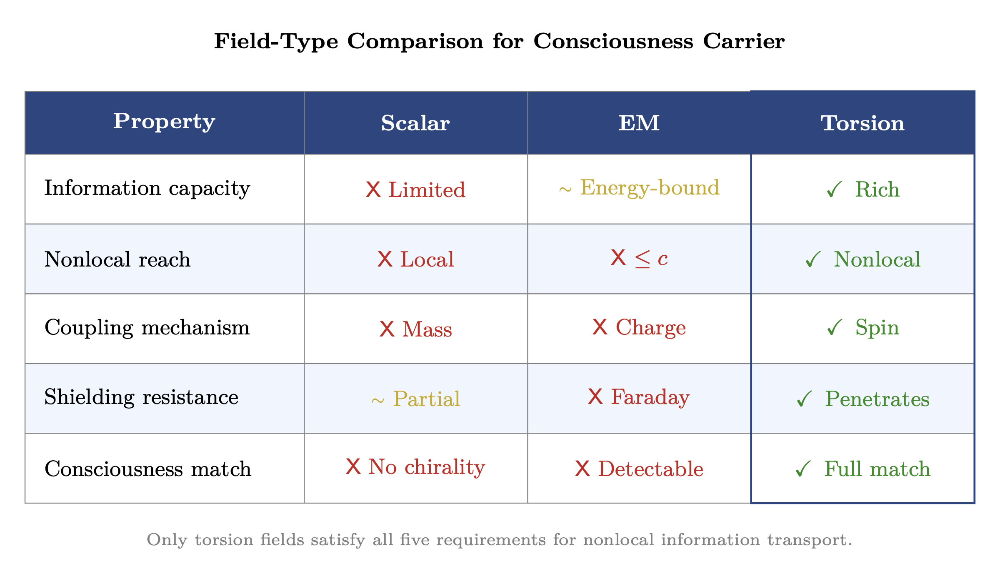
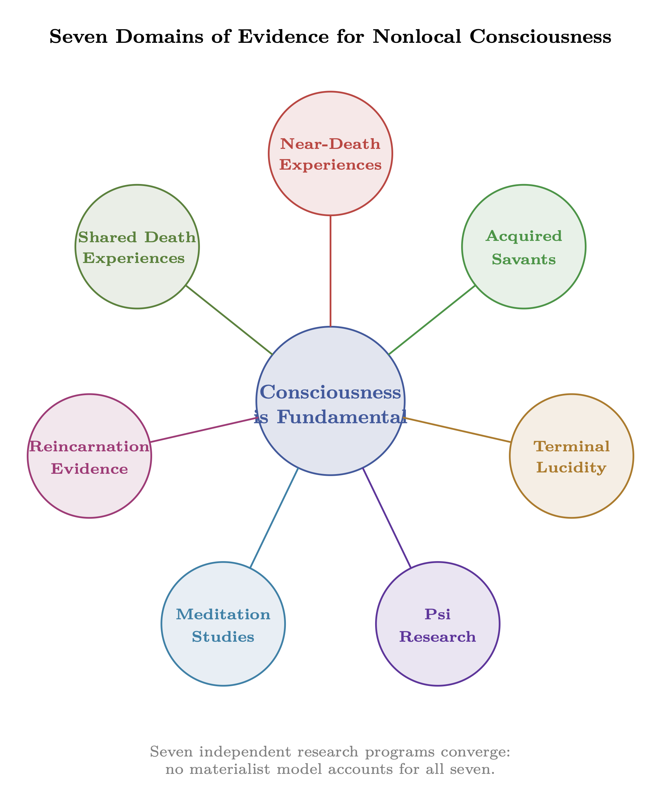

Chapter 1: Pure Consciousness as Infinite Bandwidth Source
The Carrier Wave of Reality
KEY FINDINGS — Chapter 1: Pure Consciousness as Infinite Bandwidth Source
Evidence-tier key: [L1] established/replicated evidence; [L2] grounded extension with moderate uncertainty; [L3] speculative hypothesis; [L4] conceptual/anecdotal.
- Seven independent evidence domains (NDEs, savants, terminal lucidity, psi, meditation, reincarnation, shared death) converge on predictions of filter/receiver theory over materialism [L2-MEDIUM]
- The 1/f spectral model provides scale-invariant information content, with equal information per logarithmic frequency decade [L1-HIGH]
- Acquired savant cases (brain damage creating new abilities) and terminal lucidity provide the most direct empirical challenges to brain-generates-consciousness models [L2-MEDIUM]
- The ontological claim that consciousness is fundamental is a metaphysical framework, not an empirical finding; operational predictions do not require this specific commitment [L3-SPECULATIVE]
- Psi meta-analyses show statistically significant but small effects (Cohen’s d ~ 0.14); methodological debates continue [L2-MEDIUM]
_________________________________
1. Introduction: The Source
1.1 The Core Concept
In RF engineering, a carrier wave is the fundamental signal that carries information. The carrier itself contains no information—it’s pure oscillation at a reference frequency. Information is added through modulation (amplitude, frequency, or phase changes).
Pure consciousness is modeled as the ultimate carrier wave: an infinite-bandwidth, infinite-power broadcast that exists prior to any receiver or modulation. It is not “transmitted” in the conventional sense—it simply IS the medium through which all other signals propagate.
1.2 Key RF Principles
|
RF Concept | Engineering Definition | Consciousness Mapping |
|
Carrier Wave | Unmodulated reference oscillation | Pure awareness without content |
|
Infinite Bandwidth | Contains all frequencies simultaneously | All possibilities present |
|
Infinite Power | Unlimited energy source | Inexhaustible Source |
|
Substrate/Medium | The space through which signals propagate | The “field” in which reality appears |
|
Nonlocal Correlation | Entangled elements sharing state | Psi, remote viewing, interconnection |
1.3 The Central Claim
We propose that this consciousness-as-carrier-wave is fundamental to reality in the strongest possible sense: it underlies not only perceptual phenomena (what we experience) but also physical phenomena (what exists). Matter, energy, space, and time are modulations of this substrate—patterns appearing within consciousness, not containers that somehow produce it.
This is a radical claim. It inverts the standard scientific assumption that consciousness is a late-emerging property of sufficiently complex matter. Instead, matter is a late-emerging appearance within consciousness.
The remainder of this chapter provides:
- Philosophical foundations for why this inversion is coherent (Section 2)
- The brain-as-receiver model explaining how individual minds relate to universal consciousness (Section 2.8)
- Mathematical formalization using RF/signal processing language (Section 3)
- Evidence synthesis from multiple domains (Section 8)
_________________________________
2. Philosophical Foundations
2.1 The Case for Idealism
Why propose that consciousness is fundamental rather than emergent from matter? The answer lies in a series of deep problems that materialism has been unable to solve—problems that dissolve entirely if we invert the ontology and take consciousness as primitive.
Idealism’s Core Claim: Consciousness is the ontological primitive from which everything else emerges. Matter becomes appearance within consciousness rather than consciousness being an inexplicable addition to matter.
This is not mysticism—it’s a coherent metaphysical position supported by rigorous philosophical argument, as we develop in the following sections.
2.2 The Hard Problem of Consciousness
Chalmers’ Formulation (1995)
The “hard problem” asks: Why is there something it is like to be conscious? We can explain the neural correlates of consciousness—the “easy problems” of how the brain processes information, integrates data, produces behavior. But none of this explains why any of it is accompanied by subjective experience.
David Chalmers distinguished:
- Easy problems: Explaining behavior, cognitive mechanisms, neural correlates—these are tractable (if difficult) engineering problems
- Hard problem: Why is there subjective experience at all? Why aren’t we “zombies” processing information in the dark?
The Explanatory Gap (Levine, 1983)
No mechanism bridges objective brain states to subjective qualia. We can describe every physical fact about the brain processing red light—wavelengths absorbed, neurons firing, information processed—yet miss the redness of red, the felt quality of the experience.
This isn’t a gap in our current knowledge. It’s a gap in the type of explanation. Third-person facts (brain states) and first-person facts (experiences) seem to be different categories entirely.
The Zombie Argument (Chalmers, 1996)
A being physically identical to you, with identical brain processes, but with no inner experience, is conceivable. It would behave identically, react to pain identically, claim to have experiences identically—but the lights would be off inside.
If such a zombie is even conceivable, then physical facts don’t logically entail experiential facts. Consciousness is something additional to physics.
Materialists object that zombies aren’t actually possible. But the burden of proof is on them: show how physical facts necessitate experience. After three decades, no one has.
The Knowledge Argument (Jackson, 1982)
Mary is a color scientist who has lived her entire life in a black-and-white room. She knows every physical fact about color vision—wavelengths, cone cells, neural processing. Then she leaves the room and sees red for the first time.
Does Mary learn something new? Intuitively, yes—she learns what red looks like, the qualitative feel of redness. But if she already knew every physical fact, then what she learned must be non-physical. Therefore, qualia are not reducible to physical facts.
Why This Supports Idealism
These problems dissolve if consciousness is fundamental. There’s no hard problem of “how does matter generate experience” if matter is appearance within experience. The explanatory gap closes because we’re not trying to derive first-person from third-person—first-person is primitive.
The zombie argument loses its force because consciousness isn’t an addition to physics—physics is a pattern within consciousness. You can’t have the physical facts without the experiential ground in which they appear.
2.3 Arguments Against Materialism
The Combination Problem
Panpsychism—the view that fundamental particles have proto-experience—attempts to solve the hard problem by making experience ubiquitous. But this creates a new problem:
- How do billions of micro-experiences combine into one unified consciousness?
- You have one visual field, not 86 billion neuron-experiences
- No mechanism has been proposed for this combination
- The combination problem is arguably harder than the hard problem it was meant to solve
The Binding Problem
Brain processing is distributed across billions of neurons firing in different regions. Yet experience is unified—you have one visual field, one stream of consciousness, one sense of self.
- How does the brain integrate distributed processing into unified experience?
- No neural mechanism has been identified that explains binding
- Timing can’t be the answer—neurons in different regions fire at different times
- Spatial proximity can’t be the answer—bound experiences involve distant brain regions
Causal Closure
Physics claims to be causally closed—all physical events have physical causes.
- If so, where does mental causation fit?
- Either consciousness is epiphenomenal (your decisions don’t actually cause your actions—the brain would behave identically without experience)
- Or physics is incomplete (not causally closed)
- Both options are deeply uncomfortable for materialism
Kastrup’s Critique
Bernardo Kastrup argues that materialism is a metaphysical assumption, not a scientific finding:
- Science discovers correlations and mechanisms
- Materialism is an interpretation of those discoveries
- An equally coherent interpretation: matter is what mind looks like from outside
- Idealism explains the same data with fewer assumptions (one substance, not two)
- Ockham’s razor favors the more parsimonious metaphysics
The Pattern: Every materialist attempt to explain consciousness either fails to explain experience (ignoring the hard problem), or creates new problems as difficult as the original (combination, binding). After decades of effort, we have no materialist theory of consciousness—only promissory notes.
Epistemic note [L3]: The idealist ontological position is a philosophical framework, not an empirical claim. The operational predictions in subsequent chapters do not depend on this specific metaphysical commitment.
2.4 Eastern Traditions
|
Tradition | Concept | Description |
|
Hinduism | Brahman/Atman | Infinite consciousness is the only reality; the individual soul (Atman) is identical with ultimate reality (Brahman). “Tat tvam asi”—Thou art That. |
|
Advaita Vedanta | Non-duality | “Brahman alone is real; the world is appearance.” Shankara (8th c.): What appears as multiplicity is one consciousness appearing differentiated. |
|
Buddhism | Buddha-nature/Dharmakaya | Luminous awareness is the ground of all phenomena. The “clear light” that underlies all experience. Form is emptiness; emptiness is form. |
|
Taoism | Tao | The Way—the fundamental principle from which all arises. “The Tao that can be spoken is not the eternal Tao.” Prior to naming, prior to distinction. |
These traditions, developed independently across thousands of years, converge on a single claim: ultimate reality is consciousness, not matter. Physical reality is a modulation or appearance within that consciousness.
2.5 Western Mysticism
|
Tradition | Concept | Description |
|
Neoplatonism | The One | Plotinus (3rd c.): A singular, transcendent source from which all emanates. Not “a thing” but the condition for all things. Beyond being, beyond knowing. |
|
Christian Mysticism | Godhead | Meister Eckhart (14th c.): The “Gottheit” (Godhead) is the ground of being beyond God-as-Creator. “The eye through which I see God is the same eye through which God sees me.” |
|
Kabbalah | Ein Sof | The Infinite—boundless, limitless source before any manifestation. The Sephirot are emanations; Ein Sof is prior to emanation itself. |
|
Sufism | Wahdat al-Wujud | Unity of Being (Ibn Arabi, 13th c.): Only God truly exists; creation is the self-disclosure of the One. |
2.6 Modern Synthesis
Perennial Philosophy (Aldous Huxley, 1945): Across all cultures and times, a universal metaphysic recognizes:
- A divine Reality underlying the world of things
- A divine Reality underlying individual human souls
- The identity or unity of these
- The purpose of life is to discover this identity
Theosophy (H.P. Blavatsky, 1888):
- Universal consciousness is the essence of all life
- Matter and spirit are two poles of the same substance
- Evolution is consciousness awakening to itself through form
Law of One (Ra Material, 1981-1984):
- “All is One”—a single infinite Creator exploring itself
- Densities represent levels of consciousness evolution
- Free will is the first distortion; love and light follow
- All separation is illusion; all paths return to Source
2.7 Contemporary Framework: Kastrup’s Analytical Idealism
Bernardo Kastrup (Ph.D. Philosophy, Ph.D. Computer Engineering; former CERN researcher) provides the most rigorous contemporary formulation:
Core Thesis: Reality is fundamentally mental. What we call “matter” is the appearance of mental processes, not a separate substance.
The Dashboard Analogy: Brain states are like a dashboard displaying information about underlying processes. The dashboard doesn’t generate the car’s motion; it represents it. Similarly, brain states don’t generate consciousness—they represent mind’s self-localization process.
The Dissociation Model: Individual minds are dissociated segments of universal consciousness, analogous to Dissociative Identity Disorder in psychology. Each “alter” experiences itself as separate, yet all are expressions of one mind.
Why This Matters for the Model: Kastrup shows that idealism isn’t mysticism—it’s a coherent metaphysical position that:
- Solves the hard problem (consciousness is primitive, not emergent)
- Is parsimonious (one substance, not two)
- Has empirical support (dissociation is observed; emergence of consciousness is not)
Key Works:
- Why Materialism Is Baloney (2014)
- The Idea of the World (2019)
- Decoding Schopenhauer’s Metaphysics (2020)
2.8 The Brain as Receiver: Filter Theory
If consciousness is the fundamental substrate, what is the brain’s role? The brain doesn’t generate consciousness—it reduces it.
The Philosophical Lineage Henri Bergson (1896): In Matter and Memory, Bergson argued that the brain acts as a “filter” that narrows consciousness to what is biologically useful. The brain doesn’t produce mind—it restricts it, channeling infinite awareness into the narrow stream needed for survival.
William James (1898): James proposed that consciousness may be “transmitted” through the brain rather than produced by it, comparing the relationship to light passing through a prism or wind through a harp. The brain shapes and limits what gets through, but isn’t the source.
Aldous Huxley (1954): In The Doors of Perception, Huxley extended this to explain psychedelic experiences. The brain normally functions as a “reducing valve” filtering out the vast majority of consciousness. Psychedelics (and meditation, mystical states) partially open this valve.
Why Transmitter Models Fail The brain-as-transmitter model fails because:
- Transmitters require power sources, and the brain’s ~20W metabolic budget appears disproportionately low compared to its information processing capacity, suggesting reception rather than generation
- Transmitters are localized (but consciousness seems nonlocal in psi phenomena)
- Transmitters generate signals (but consciousness seems to receive/tune, not generate)
Why Receiver Models Succeed The brain-as-receiver model (with consciousness as carrier) succeeds because:
- Receivers tune into pre-existing signals
- The signal (consciousness) exists independent of any particular receiver
- Multiple receivers can access the same signal (shared consciousness experiences)
- Damage to receiver degrades reception, doesn’t eliminate the signal
The Key Insight: The receiver doesn’t determine what exists—it determines what is perceived. The infinite-bandwidth Source is always present; the brain shapes how much of that infinite signal reaches embodied awareness. We are not isolated minds in a dead universe; we are localized apertures through which universal consciousness experiences itself from a particular vantage point.
_________________________________
3. Mathematical Model
3.1 The Infinite Bandwidth Source
A finite-bandwidth signal has power spectral density limited to range \([f_1, f_2]\): \[ S(f) = \begin {cases} P_0 & f_1 \leq f \leq f_2 \\ 0 & \text {otherwise} \end {cases} \] For the Source signal, a constant power spectral density across infinite bandwidth is unrealistic. A more physically motivated model uses 1/f (pink noise) spectrum: \[ S_{Source}(f) = \frac {P_0}{|f|^\alpha } \quad \text {where } \alpha \approx 1 \] Note: The 1/f spectrum requires both high-frequency and low-frequency cutoffs for finite total power. The model assumes \(f_{min} \sim 1/t_{universe}\) (set by cosmic age) and \(f_{max} \to \infty \) (limited only by Planck scale).
Why 1/f spectrum?
|
Property | Significance |
|
Scale invariance | Same structure at all scales—zoom in or out, pattern is self-similar |
|
Ubiquity in nature | Heartbeat variability, brain waves, river flooding, stock markets, cosmic background |
|
Fractal/holographic | A hallmark of systems where the whole is encoded in each part |
|
Total information still diverges | \(\int S(f)df\) \(\rightarrow \) \(\infty \), preserving the “infinite information” claim |
The key claim is not that power is literally uniform, but that Source contains information at ALL scales. The 1/f spectrum better captures “all frequencies present with self-similar structure” than a flat spectrum.
Information Content (Shannon capacity): \[ C = B \log _2(1 + SNR) \] For infinite effective bandwidth, the Source contains infinite information: \[ C_{Source} = \lim _{B \to \infty } B \log _2(1 + SNR) = \infty \] Note: The \(C \to \infty \) result follows trivially from \(B \to \infty \) for any non-zero SNR. The meaningful claim is not the total capacity (which is infinite for any broadband signal) but that the 1/f spectral shape ensures information content is scale-invariant — information density at scale \(f\) goes as \(1/f\), ensuring equal information per logarithmic frequency decade.
Receivers extract finite subsets based on their reception characteristics. Impedance boundaries (developed in Ch2-4) ensure that receivers only couple to finite portions of Source despite its infinite information content. This is not a bug—it enables differentiated experience.
Note: The specific mathematics is a model—a way of making the philosophical claim precise. The claim is ontological: consciousness-as-Source contains all possibilities. The math gives us a language to discuss what this means.
3.2 Why Torsion Fields (Not Scalar, Not EM)
The consciousness substrate is modeled as a torsion field \(\vec {T}(\mathbf {x}, t)\). This choice is not arbitrary—torsion fields uniquely possess the properties required by consciousness phenomena.
Why Not Scalar Fields? Scalar fields (like the Higgs field) are characterized by a single value at each point—no direction, no rotation.
|
Property | Scalar Field | Consciousness Requirement |
|
Intrinsic angular momentum | None | Consciousness phenomena involve rotation, chirality |
|
Biological coupling | To mass | DNA helix, microtubules are helical—spin structures |
|
Handedness | None | Brain lateralization, chiral molecules in biology |
|
Information capacity | Limited | Requires rich structure for infinite information |
Scalar fields cannot carry the “handedness” observed in consciousness and biology. A scalar can’t distinguish left from right—but consciousness clearly does.
Why Not Transverse Electromagnetic Fields? EM fields are the best-understood wave phenomena, but they fail the consciousness requirements:
|
Property | EM Field | Consciousness Requirement |
|
Information transfer | Energy-bound | Non-energetic (psi doesn’t transfer energy) |
|
Speed | Limited to c | Nonlocal effects appear instantaneous |
|
Shielding | Easily blocked (Faraday cage) | Consciousness penetrates all shielding |
|
Coupling | To charge | Biological consciousness involves spin, not charge |
|
Detection | Standard instruments | Consciousness effects aren’t electromagnetically detectable |
If consciousness were electromagnetic, Faraday cages would block telepathy (they don’t), and we’d have detected the signal (we haven’t).
Why Torsion Fields Work Torsion fields arise from the Einstein-Cartan extension of general relativity, where spacetime has both curvature (gravity) and torsion (spin coupling):
|
Property | Torsion Field | Why This Matters |
|
Couples to spin | Intrinsic angular momentum | Matches quantum mechanical foundation of matter |
|
Non-energetic transfer | Information without energy | Explains psi phenomena (no energy detected) |
|
Inherently nonlocal | Phase correlations without propagation | Matches instantaneous correlations in consciousness |
|
Helical coupling | Natural affinity for helical structures | DNA, microtubules, proteins are helical |
|
Theoretical basis | Einstein-Cartan gravity | Not ad hoc—predicted by extending GR |
|
Superluminal information | Potentially faster than c | Matches nonlocal consciousness phenomena |
The Torsion Wave Equation (from Chapter 0): \[ \nabla ^2 \vec {T} - \frac {1}{v^2} \frac {\partial ^2 \vec {T}}{\partial t^2} = -\mu \, \vec {S} \] Where:
|
Variable | Description |
|
\(v\) | torsion wave velocity (potentially superluminal) |
|
\(\mu \) | coupling constant |
|
\(\vec {S}\) | spin source density (consciousness/intention as spin configuration) |
This equation allows:
- Propagation potentially faster than \(c\) (information, not energy)
- Superposition (multiple “signals” coexist without interference)
- Standing waves (stable patterns = persistent forms)
- Nonlocal correlations via the torsion Green’s function

_________________________________
4. Assumptions
4.1 Core Assumptions
- 1.
- Consciousness precedes matter (ontological idealism)
- Philosophical support: Kastrup’s analytical idealism; Chalmers’ hard problem demonstrates no reduction of consciousness to physics; Eastern traditions (Advaita, Buddhism) converge on consciousness-first ontology
- Empirical hints: NDEs show enhanced consciousness during reduced brain function; psychedelics show expanded experience during reduced neural activity
- 2.
- Single unified field (monism)
- Support: Advaita Vedanta (“Brahman alone is real”); Neoplatonic One; Perennial Philosophy convergence across cultures
- Coherence argument: Multiple independent consciousness fields would require explanation of their interaction—monism is more parsimonious
- 3.
- Nonlocality is real
- Support: Quantum entanglement demonstrates nonlocality in physics; psi meta-analyses show weak but consistent nonlocal effects (Radin, 2006; Storm et al., 2010)
- Model requirement: Torsion fields inherently support nonlocal correlation
- 4.
- Receivers are physical interfaces
- Brain, DNA, cellular structures transduce consciousness into embodied experience
- They don’t generate consciousness—they filter, shape, and localize it
- Damage to receiver changes the quality of reception, not the existence of the signal
- 5.
- Torsion fields are the physical substrate of consciousness
- The mapping: Consciousness, as described by idealist philosophy and contemplative traditions, maps onto torsion field dynamics in physics. The torsion field IS consciousness as seen from the third-person (physical) perspective; consciousness IS the torsion field as experienced from the first-person (experiential) perspective.
- Why torsion specifically: Torsion fields uniquely possess the properties that consciousness phenomena require—nonlocality (instantaneous correlation without signal propagation), non-energetic information transfer (psi effects show no energy signature), coupling to spin (biological structures are helical), and superluminal information capacity (consciousness appears to access past/future). No other known field type has this combination.
- Theoretical grounding: Torsion arises naturally from Einstein-Cartan gravity—the extension of general relativity that includes intrinsic angular momentum (spin). This isn’t an ad hoc addition; it’s what happens when you take spin seriously in spacetime geometry.
- The dual-aspect claim: Just as “water” and “H\(_2\)O” refer to the same substance from different descriptive frameworks (folk vs. chemical), “consciousness” and “torsion field” refer to the same reality from different epistemic positions (first-person vs. third-person). This is not a reduction of consciousness to physics—it’s a recognition that physics, properly extended, describes the same reality that consciousness experiences from within.
- Empirical bridge: This assumption allows the model to make testable predictions. If consciousness IS the torsion field, then manipulating torsion should affect consciousness, and focused consciousness (intention, meditation) should produce measurable torsion effects. Preliminary research on “intention imprinting” and meditation-induced field effects is consistent with this, though not yet definitive.
4.2 Limitations
- 1.
- The model’s ontological claims (consciousness is fundamental) are metaphysical, not empirically decidable
- 2.
- The “infinite bandwidth” formalization is mathematical convenience, not a measurable property
- 3.
- Filter theory predicts enhanced consciousness with brain damage, but most brain damage reduces function — the model must explain why only specific damage types produce enhancement
- 4.
- The 1/f spectrum model for Source is an ansatz, not derived from first principles
_________________________________
5. Common Objections and Responses
|
Objection | Response | Developed In |
|
“Not falsifiable by physics” | Physics presupposes physicalism—its instruments detect matter and energy, not consciousness. This is an epistemic boundary showing the limits of third-person methodology, not a flaw in the model. First-person evidence (direct experience) is admissible. | Section 4 |
|
“Infinite quantities are problematic” | Impedance boundaries in the density cascade ensure finite reception despite infinite Source. Each boundary reflects power; cumulative mismatch explains why “spiritual development” improves access—it’s impedance matching. | Ch2, Ch5 |
|
“No mechanism specified” | Standing wave demodulation in resonant cavities (brain, DNA) extracts patterns from the torsion field. The boundary surface of the cavity acts as the “observer” per holographic principle. | Ch3 |
|
“Observer problem / infinite regress” | The holographic boundary terminates the regress. Information about the volume is encoded on the boundary surface. The boundary IS the final observer—it doesn’t require observation to exist. | Ch3 |
|
“Just mysticism dressed as science” | The RF model makes specific predictions (weak psi effects, enhanced consciousness during reduced brain activity, impedance-based perception limits) that differ from both materialism and vague spirituality. It’s testable within its domain. | Section 6 |
_________________________________
6. Predictions
6.1 Qualitative Predictions
P1: Consciousness cannot be fully localized to brain.
- Damage to brain changes reception quality but doesn’t eliminate consciousness-as-such
- Evidence: NDEs, terminal lucidity, split-brain studies showing unified experience despite severed corpus callosum
P2: Nonlocal phenomena (psi) should be real but weak.
- Weak because coupling through physical receivers is imperfect
- Real because the substrate (torsion field) is inherently nonlocal
- Matches meta-analytic findings: small but statistically robust effect sizes
P3: Altered states should access more of Source.
- Meditation, psychedelics, near-death states expand receptive capacity
- Mechanism: altered states change reception characteristics, allowing more of the infinite signal through
- Evidence: Expanded experiences reported during reduced default mode network activity
P4: Death should not eliminate consciousness.
- Death removes one receiver; the signal (Source) continues
- Evidence: NDEs report continuity of experience during clinical death; veridical perception during cardiac arrest
P5: Mystical unity experiences reflect accurate perception.
- Momentary expansion of receptive capacity toward Source
- Not hallucination but reduced filtering—seeing more of what’s actually there
- “All is One” is not metaphor but direct perception of the unfiltered substrate
6.2 Falsification Criteria
- F1 — Complete neural explanation. If neuroscience fully explains all aspects of consciousness (qualia, free will, psi) without remainder—with an actual mechanism for how objective processes become subjective experience—then the consciousness-as-fundamental claim becomes unnecessary.
- F2 — No psi effects. If rigorous research definitively rules out all nonlocal consciousness phenomena across all methodologies, the nonlocal substrate prediction fails.
- F3 — Consciousness proven emergent. If a clear mechanism shows how subjective experience arises from objective matter (solving the hard problem from the materialist side), the idealist ontology is superseded.
- F4 — Brain-generated consciousness. If expanded experience consistently correlated with increased brain activity (opposite of what psychedelic and meditation research shows), the filter/receiver model is falsified.
_________________________________
7. Relationship to Other Frameworks
7.1 Downstream in This Document
|
Chapter | Connection |
|
Ch0 | Physical mechanism (torsion fields as substrate) |
|
Ch2 | How Source is stratified into density tiers (impedance cascade) |
|
Ch3 | How patterns emerge from Source (standing wave demodulation) |
|
Chapter 5 | Individual reception mechanics (RLC circuit model) |
|
Chapter 8 | Collective reception (phased array) |
|
Chapter 14 | Complete accounting (link budget from Source to receiver) |
This chapter provides the source term—the \(P_{Source}\) that appears in all subsequent calculations. Chapters 2-4 develop how this infinite Source gets stepped down to finite reception.
7.2 Consistency with External Frameworks
|
Framework | Relationship |
|
Orch-OR (Penrose-Hameroff) | Compatible—microtubules may function as torsion transducers. Quantum processes in microtubules couple consciousness to matter. |
|
IIT (Tononi) | Compatible—Integrated Information (\(\Phi \)) measures integration of a physical system; we add the nonlocal torsion substrate that systems integrate with. |
|
Global Workspace (Baars) | Compatible—the “workspace” that integrates information accesses the torsion field; neural correlates are the receiver mechanism. |
|
Kastrup’s Analytical Idealism | Highly aligned—consciousness fundamental, brain as image/filter. Our RF model provides physics for Kastrup’s metaphysics. |
|
PTI (Kastner) | Compatible—transactions (offer/confirmation waves) occur in torsion field; actualization creates spacetime events. Developed in Ch3. |
|
Bohm’s Implicate Order | Compatible—Source as implicate order (enfolded potential); densities as explicate order (unfolded manifestation). |
|
Sheldrake’s Morphic Fields | Compatible—morphic fields may be torsion field patterns; morphic resonance is template strengthening through repeated instantiation. |
_________________________________
8. Evidence Synthesis
8.1 NDEs and OBEs
Veridical Perception During Clinical Death
- AWARE Study (Parnia et al., 2014): Multicenter study of 2,060 cardiac arrest patients found 9% reported NDEs, with 2% exhibiting explicit recall of events during clinical death. One verified case of accurate perception during 3-minute cardiac arrest when brain activity had ceased.
- Van Lommel Prospective Study (2001): 344 cardiac arrest survivors in Netherlands; 18% reported NDEs with consistent phenomenology regardless of duration of cardiac arrest, medications administered, or prior knowledge of NDEs.
- Greyson NDE Scale Validation: Standardized 16-item scale demonstrates cross-cultural consistency in NDE features (life review, tunnel, light, deceased relatives) across 50+ studies.
Information Acquired Anomalously
- Documented cases of blind individuals accurately describing visual details during NDEs (Ring & Cooper, 1999)
- Sabom (1982): Cardiac patients accurately described surgical procedures occurring while clinically dead, verified against medical records
- Torsion field interpretation: Consciousness accessing information via nonlocal field dynamics when brain transduction is suspended
Why This Supports Idealism: NDEs provide the clearest empirical challenge to materialism. If consciousness is generated by the brain, it should cease—or at minimum degrade—when the brain stops functioning. Instead, we observe the opposite: enhanced clarity, expanded awareness, veridical perception. This is exactly what filter theory predicts: remove the filter, and more of the infinite Source becomes accessible.
8.2 Psi Research
Ganzfeld Meta-Analysis
- Storm et al. (2010): Meta-analysis of 108 ganzfeld studies (1974-2009), n=3,066 sessions, hit rate 31.8% vs. 25% chance expectation (p < 10^{-7})
- Effect size (Cohen’s d = 0.14) consistent with weak but real signal—matching the model’s prediction that coupling is imperfect
Critics (Hyman 2010) note unresolved methodological concerns in ganzfeld studies, including randomization quality and potential sensory leakage. The debate continues, though meta-analytic robustness suggests the effect is not purely artifactual.
STARGATE Remote Viewing Program
- 20-year classified program (1972-1995) produced statistically significant results in controlled conditions
- Targ & Puthoff (1974): Initial SRI studies showed remote viewers describing targets with accuracy far exceeding chance
- AIR Final Report (1995): Acknowledged statistically significant laboratory effects (effect size 0.16-0.30) while questioning operational utility
Presentiment Studies
- Mossbridge et al. (2012): Meta-analysis of 26 studies showing physiological responses occurring 2-10 seconds before random emotional stimuli (p = 2.7 \(\times \) 10^{-12})
- Suggests consciousness accesses future information via nonlocal torsion field dynamics
Epistemic note [L2]: Psi research meta-analyses show statistically significant but small effects. Methodological debates continue. The framework’s predictions do not require psi to be real — they predict what would be observed IF the filter model is correct.
Why This Supports Idealism: Psi effects, though weak, demonstrate that consciousness is not confined to the brain. Information transfer occurs without any known physical mechanism—no electromagnetic signal, no energy transfer. This is inexplicable if consciousness is brain-generated, but expected if consciousness operates through a nonlocal torsion field substrate. The weakness of the effects matches the model’s prediction: coupling through physical receivers is inherently imperfect.
8.3 Meditation Research
EEG Correlates of Expanded Awareness
- Gamma coherence in advanced meditators: Lutz et al. (2004) found Tibetan monks with 10,000+ practice hours showed gamma oscillations (25-42 Hz) 25\(\times \) higher than controls during compassion meditation
- Long-range phase synchronization: Davidson & Lutz (2008) documented increased inter-hemispheric coherence correlating with reported unity experiences
Reduced Activity, Expanded Experience
- Brewer et al. (2011): fMRI showing decreased default mode network activity during meditation, interpreted as reduced “receiver filtering”—allowing more of Source through
- Carhart-Harris et al. (2012): Psilocybin reduces brain activity yet produces expanded, not contracted, experience—consistent with filter theory
Long-Term Practitioner Capabilities
- Kozhevnikov et al. (2013): Advanced Tibetan practitioners demonstrated 2-3\(\times \) enhancement in visual/spatial cognition tasks
- Enhanced perception suggests expanded access to Source through long-term practice
Epistemic note [L2]: The correlation between reduced default mode network activity and expanded experience is replicable, but its interpretation as evidence for filter theory rather than altered information processing remains debated in the neuroscience literature.
Why This Supports Filter Theory: The consistent finding that reduced brain activity correlates with expanded experience directly contradicts materialism. If the brain generates consciousness, reducing its activity should reduce experience. Instead, quieting the default mode network expands awareness—exactly as predicted by the reducing valve model. Long-term practitioners show this isn’t a fluke: sustained practice produces measurable expansion of perceptual and cognitive capabilities.
8.4 Quantum Consciousness Connections
Orchestrated Objective Reduction (Orch-OR)
- Penrose-Hameroff theory: Consciousness arises from quantum computations in microtubules, collapsing via objective reduction
- Microtubule geometry (helical, 8nm periodicity) mirrors DNA’s antenna properties—potential torsion transducers
- Recent evidence (Craddock et al., 2017): Anesthetic gases selectively bind microtubules, correlating with consciousness loss
Quantum Coherence in Biology
- Photosynthesis: Fleming et al. (2007) demonstrated quantum coherent energy transfer in photosynthetic complexes lasting 100s of femtoseconds at biological temperatures
- Avian navigation: Magnetoreception in birds appears to use quantum entangled radical pairs (Ritz et al., 2004)
- Supports premise that biological systems can maintain quantum/torsion coherence despite thermal noise
Nonlocal Brain Correlations
- Wackermann et al. (2003): EEG correlations between isolated subjects upon stimulation of one—unexplained by classical EM shielding
- Replication attempts mixed but some positive (Radin, 2004)
- Torsion model prediction: Phase-locked consciousness creates nonlocal correlation detectable as synchronized brain activity
Why This Supports the Model: Quantum coherence in biological systems demonstrates that the warm, wet brain can maintain the delicate correlations required for torsion field coupling. The nonlocal brain correlations between isolated subjects suggest consciousness operates outside classical locality constraints—consistent with a torsion field substrate that is inherently nonlocal.
8.5 Savant Syndrome and Acquired Savants
Savant abilities—where individuals demonstrate extraordinary capabilities in specific domains—provide some of the strongest evidence for filter theory. Particularly striking are acquired savants, where brain damage creates new abilities.
Congenital Savants
- Kim Peek: Memorized over 12,000 books despite severe brain abnormalities (agenesis of corpus callosum). Could read two pages simultaneously (one with each eye) and recall content years later with near-perfect accuracy.
- Daniel Tammet: Extraordinary mathematical and linguistic abilities combined with synesthesia. Recited pi to 22,514 digits; learned Icelandic in one week. Has described numbers as having textures, colors, and shapes.
- Stephen Wiltshire: Draws entire cityscapes from memory after a single helicopter ride with remarkable accuracy. Diagnosed with autism at age three.
Acquired Savants (Strongest Filter Theory Evidence)
These cases are particularly significant because brain damage created abilities that didn’t exist before:
- Alonzo Clemons: Severe head injury as a toddler left him with an IQ around 50, yet he became capable of sculpting perfect animal forms after seeing an animal only briefly—even in the dark.
- Jason Padgett: Brutal assault outside a karaoke bar caused a severe concussion. He woke up seeing geometric patterns in everything—water dripping, light reflecting. Now creates complex mathematical illustrations and has become a mathematics researcher.
- Derek Amato: Dove into a shallow pool and suffered a severe concussion. Woke up able to play piano despite never having learned—now composes and performs professionally.
- Orlando Serrell: Hit by a baseball at age 10. Gained the ability to perform calendar calculations and remember the weather and what he did every day since the injury.
- Tony Cicoria: Struck by lightning. Developed an overwhelming desire to play piano and began hearing music in his head. Now composes and performs classical music.
Why This Strongly Supports Filter Theory
Brain damage increases capabilities—exactly backwards from the materialist prediction that brain damage should only reduce function.
- If the brain generates abilities, damaging it should reduce abilities
- Instead, specific damage unlocks abilities that appear to have always been latent
- This suggests the “normal” brain actively suppresses or filters capabilities that are always available
Scientific Research
- Allan Snyder’s “Savant Cap” (TMS): Temporarily disrupting the left frontotemporal region in normal subjects enhanced drawing accuracy and proofreading abilities. The effect was achieved by reducing function in one area.
- Darold Treffert (world’s leading savant researcher): After studying savants for over 50 years, concluded: “The brain is not the source of these abilities—it’s the filter. When the filter is damaged, these inherent capabilities can emerge.”
8.6 Reincarnation Research
The University of Virginia Division of Perceptual Studies (DOPS) has systematically investigated cases of children who report memories of previous lives for over 50 years.
University of Virginia Research Program
- Founded by Ian Stevenson (1967), continued by Jim Tucker
- Over 2,500 documented cases of children with apparent past-life memories
- Rigorous methodology: Verified details before identifying “previous personality”
- Cases from all cultures, including Western countries where reincarnation isn’t culturally expected
Types of Evidence
- Verified Statements: Children accurately describe homes, family members, occupations, and events from a deceased stranger’s life—details later verified by investigators
- Birthmarks and Birth Defects: Stevenson documented 225 cases where birthmarks or defects corresponded to wounds on the “previous personality,” verified against medical and autopsy records
- Behavioral Correspondences: Children display phobias, skills, and preferences matching the previous personality (e.g., fear of water when previous personality drowned; skill at an instrument previous personality played)
- Xenoglossy: Rare cases of speaking languages never learned in this life (Stevenson documented several responsive xenoglossy cases)
Key Cases
- James Leininger: At age 2, began having nightmares of plane crashes and described being a WWII fighter pilot shot down at Iwo Jima. Named his pilot “James Huston,” identified the aircraft carrier (Natoma Bay), and described details verified against military records. Identified Huston’s former squadron mates from photographs.
- Shanti Devi (1926-1987): At age 4, began describing a previous life in a town 90 miles away. Recognized her “former husband” and his family, described the house (which had been modified since), and knew details verified by Gandhi’s investigation committee in 1936.
- Ryan Hammons: At age 4, identified a man in a photo from 1930s Hollywood as “me.” The man turned out to be an obscure extra—not a star—named Marty Martyn. Ryan knew details verified only after extensive archival research (e.g., Martyn had two sisters, danced on Broadway, worked for an agency whose name Ryan knew).
Why This Supports Idealism
- Consciousness retains information across biological death
- Memories are not stored in the brain (which decomposed)
- Suggests consciousness is fundamental, using the brain as a temporary interface
- The physical substrate changes completely; only consciousness continues
8.7 Shared Death Experiences
Shared death experiences (SDEs) occur when healthy individuals at a deathbed report NDE-like phenomena alongside or simultaneous with the dying person.
Phenomenon Description
- Bystanders (family, nurses, friends) experience elements of the dying person’s transition
- Crucially, bystanders have normal physiology—no oxygen deprivation, no drugs, no brain compromise
- Cannot be explained by “dying brain hypothesis” since bystanders’ brains are healthy
Documented Features (Raymond Moody, William Peters)
- Seeing the same light, tunnel, or deceased relatives that the dying person reports
- Witnessing the dying person’s life review—seeing their memories
- Feeling lifted out of body alongside the dying person
- Geometric patterns or light formations in the room
- Perceiving mist or energy leaving the dying person’s body
- Room appearing to change shape or expand
Research
- William Peters’ Shared Crossing Project: Systematic documentation and research program
- Estimated 20% of hospice workers report such experiences with dying patients
- Often transformative for bystanders—eliminates fear of death
- Peters’ At Heaven’s Door (2022) presents first comprehensive study
Why This Supports Idealism
- Consciousness effects extend beyond the individual brain
- Multiple observers share non-physical perception simultaneously
- No physical mechanism connects bystanders’ brains to dying person’s experience
- Strongly suggests consciousness operates in a shared field accessible to multiple observers
8.8 Terminal Lucidity
Terminal lucidity refers to unexpected episodes of mental clarity and cognitive function shortly before death, often in patients whose brains have been severely compromised for years.
Systematic Research
- Nahm & Greyson (2009): Review of 83 cases from medical literature spanning 250 years
- Nahm et al. (2012): Proposed the term “terminal lucidity,” called for systematic study
- Cases documented across dementia, strokes, tumors, meningitis, and other severe brain pathologies
Case Types
- Alzheimer’s patients: With hippocampi destroyed (required for memory formation), suddenly recognize family members, hold coherent conversations about their lives
- Brain tumor patients: With massive tissue destruction in language/cognition centers, become fully lucid
- Meningitis patients: Emerge from deep coma for final conversations
- Stroke patients: With destroyed motor areas, become mobile and verbal
Typically occurs hours to days before death—often within the final 24 hours.
Key Cases
- Anna Katharina Ehmer (documented 1922): Severely disabled from birth due to brain damage, never spoke a word in her life. Shortly before death at age 26, she sang hymns loudly and clearly for about 30 minutes, including songs she had never been taught.
- Documented Alzheimer’s case: Patient had not recognized family members for years, could not form new memories, exhibited classic end-stage dementia. Hours before death, sat up, recognized each family member by name, discussed past events coherently, said goodbye, then died peacefully.
- Patient with glioblastoma: Large tumor had destroyed most of the left hemisphere including Broca’s area (speech production). In final hours, engaged in coherent conversation with family.
Why This Supports Filter Theory
- The brain tissue required for these functions was verifiably destroyed
- If the brain generates consciousness, these capabilities should be permanently gone
- There is no materialist mechanism by which destroyed tissue can suddenly function
- Suggests consciousness uses the brain but doesn’t depend on its physical integrity
- As the brain “releases” at death, filtering decreases, allowing clearer access to consciousness
8.9 Cross-Validation Summary
The convergence of evidence across these diverse domains is striking. Each evidence type poses a specific difficulty for materialism while being predicted or naturally explained by filter theory and idealism.
|
Evidence Type | Materialist Prediction | Filter Theory Prediction | Observed |
|
NDEs | Brain offline \(\rightarrow \) no experience | Brain offline \(\rightarrow \) expanded experience | \(\checkmark \) Enhanced clarity, veridical perception |
|
Acquired savants | Brain damage \(\rightarrow \) less capability | Brain damage \(\rightarrow \) more capability (filter reduced) | \(\checkmark \) New abilities emerge from injury |
|
Terminal lucidity | Destroyed tissue \(\rightarrow \) permanent loss | Destroyed tissue \(\rightarrow \) function can return | \(\checkmark \) Full cognition despite destroyed brain |
|
Psi effects | No mechanism \(\rightarrow \) no effect | Weak but real (imperfect coupling) | \(\checkmark \) Small but statistically robust effects |
|
Meditation | Less activity \(\rightarrow \) less experience | Less activity \(\rightarrow \) more experience | \(\checkmark \) Expanded awareness with reduced DMN |
|
Reincarnation cases | Memories in dead brain \(\rightarrow \) lost | Consciousness persists \(\rightarrow \) memories persist | \(\checkmark \) Verified memories across biological death |
|
Shared death | Individual brains \(\rightarrow \) individual experience | Consciousness extends \(\rightarrow \) shared experience | \(\checkmark \) Multiple observers share dying person’s experience |
The Pattern: Materialism consistently predicts less when the brain is compromised—less experience, less capability, less access. Filter theory predicts that under certain conditions, brain compromise leads to more—because the filter is reduced. The evidence consistently supports filter theory.
Why This Matters: Any single line of evidence could be explained away. But the convergence across independent research programs—NDEs (cardiology), savants (neurology), psi (psychology), meditation (contemplative neuroscience), reincarnation (psychiatry), terminal lucidity (gerontology)—points to a common underlying reality: consciousness operates through the brain but is not generated by it.

_________________________________
8.10 Competing Hypotheses
Alternative Hypotheses for Consciousness
- 1.
- Materialism/emergence: Consciousness is generated by brain computation. Assessment: Dominant paradigm; explains most normal-state phenomenology but struggles with NDEs, terminal lucidity, and psi data.
- 2.
- Panpsychism: Consciousness is a fundamental property of matter. Assessment: Compatible with this framework; differs in whether consciousness is substrate (panpsychism) or signal (filter model).
- 3.
- Quantum consciousness (Penrose-Hameroff): Consciousness arises from quantum processes in microtubules. Assessment: Partially compatible; this framework extends the quantum substrate to torsion fields.
_________________________________
Evidence Synthesis
- Detailed source sections: 8.
Assumptions
- Detailed source sections: 4, 4.1.
Limitations
- Detailed source sections: 4.2.
Falsification
- Detailed source sections: 6.2.
Predictions
- Detailed source sections: 6, 6.1.
Strategic Relevance
Why It Matters
The filter/receiver model implies consciousness is not generated by the brain, with implications for:
- Personnel resilience: If consciousness survives brain damage, personnel exposed to traumatic brain injury may retain core cognitive capacities accessible through appropriate rehabilitation protocols
- Enhanced human performance programs: Meditation, coherence training, and altered-state protocols could expand perceptual and cognitive capabilities beyond baseline — consistent with existing programs (e.g., Monroe Institute’s Gateway Process)
- Anomalous cognition phenomena: Remote viewing, presentiment, and other psi effects, if real, represent an intelligence-gathering modality that cannot be countered by conventional SIGINT/ELINT countermeasures
_________________________________
What To Watch
- Monitor chapter prediction thresholds, proxy indicators, and coherence trend changes.
Boundaries of Use
- Apply this chapter as model-conditional doctrine; treat speculative elements as hypothesis overlays.
Reading Path
- If new to these ideas: Read Section 2 (Philosophical Foundations) first to understand why consciousness-first ontology is coherent
- If skeptical of psi/nonlocality: Read Section 8.2 (Psi Research) for meta-analytic evidence
- If interested in mechanism: Continue to Ch2 (Impedance Cascade) and Ch3 (Standing Waves)
- If coming from physics: Read Section 3 (Mathematical Model) and Ch0 (Torsion Foundation)
- If coming from meditation/contemplative practice: The filter theory (Section 2.8) and meditation research (Section 8.3) connect practice to theory
- If skeptical of filter theory: Section 8.5 (Savants) and Section 8.8 (Terminal Lucidity) provide the most direct challenges to materialism
_________________________________
End of Chapter 1: Pure Consciousness as Infinite Bandwidth Source